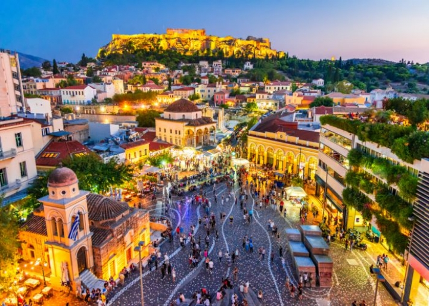
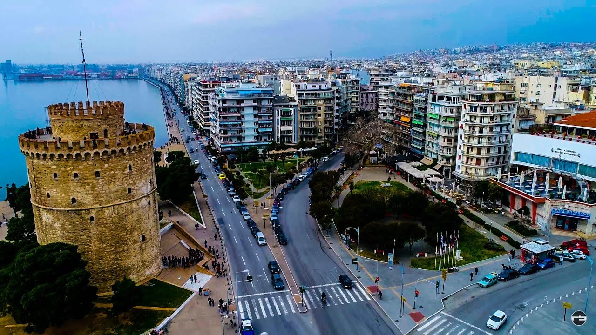
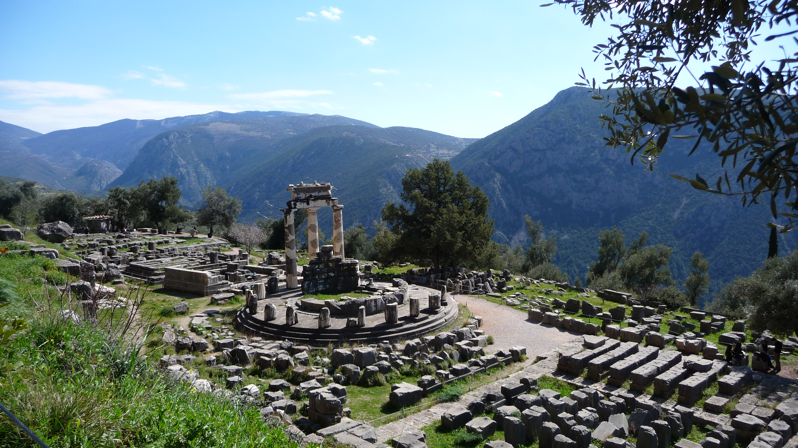

Cities
Athens
One of the most ancient cities of the world, Athens Greece is famous as the birthplace of democracy. With a history of over 3,000 years, Athens is the best town for sightseeing. According to the myth, the city took its name after Athena, the Goddess of Wisdom and daughter of Zeus. She was the protector of the city and in fact, the temple of Parthenon on the Acropolis is dedicated to her.
Thessaloniki
Sprawling around the coastline of the Thermaic Gulf, Thessaloniki is full of unique landmarks. The shore spans from the ferry harbour to the White Tower, and the many Byzantine churches and vestiges of past life sprinkled throughout the city and its historical districts make it a great place for sightseeing.
Delphi
Delphi was an ancient religious sanctuary dedicated to the Greek god Apollo. Developed in the 8th century B.C., the sanctuary was home to the Oracle of Delphi and the priestess Pythia, who was famed throughout the ancient world for divining the future and was consulted before all major undertakings.
Landmarks
Acropolis in Athens

The Acropolis of Athens is an ancient citadel located on a rocky outcrop above the city of Athens and contains the remains of several ancient buildings of great architectural and historical significance, the most famous being the Parthenon.
White Tower in Thessaloniki

Undeniably the most popular monument in Thessaloniki and the trademark of the city, the White Tower, located along the waterfront of Greece’s second city, stands tall. This famous landmark is connected to the city’s rich past and offers visitors captivating views of the area, including the Thermaic Gulf. Today, the construction is home to a unique museum, making it one of the latest additions to the cultural scene of Thessaloniki.
Apollo at Delphi

Delphi, ancient town and seat of the most important Greek temple and oracle of Apollo. It lay in the territory of Phocis on the steep lower slope of Mount Parnassus, about 6 miles (10 km) from the Gulf of Corinth. Delphi is now a major archaeological site with well-preserved ruins. It was designated a UNESCO World Heritage site in 1987.
Famous Citizens
Homer

Homer was the presumed author of the Iliad and the Odyssey, two epic poems that are the foundational works of ancient Greek literature. The Iliad is set during the Trojan War, the ten-year siege of the city of Troy by a coalition of Greek kingdoms.
Plato

Plato was an Athenian philosopher during the Classical period in Ancient Greece, founder of the Platonist school of thought and the Academy, the first institution of higher learning in the Western world.
Socrates

Socrates was a Greek philosopher from Athens who is credited as one of the founders of Western philosophy, and as being the first moral philosopher of the Western ethical tradition of thought.